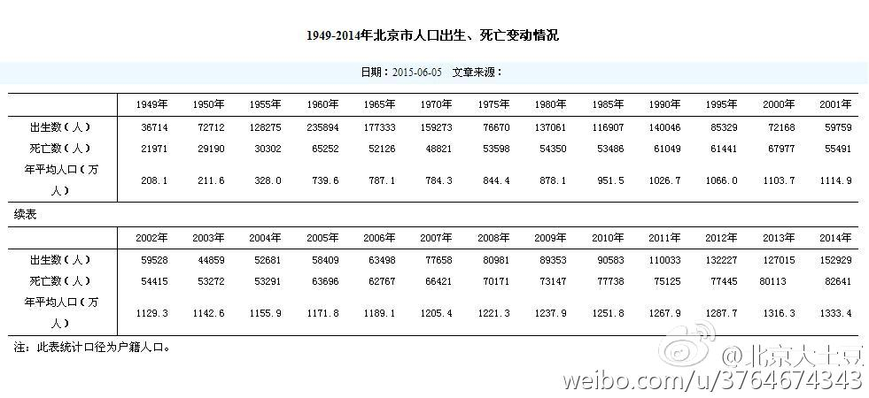

闺女正好是2003年出生的，那年出生率低一个原因是非典，一个原因是农历羊年。记得论坛上有位妈妈哀叹生了个羊尾巴的女儿，命会不好，我说这年出生的孩子上学和工作的竞争者会少许多，该庆幸还有那么多愿意迷信的人。
@北京大土豆:
1949-2014北京市人口出生情况。可以看出，上世纪80-90年代出生的孩子，跟最近几年差不多，典型的婴儿潮。从90年开始新出生婴儿开始下降，一直降到2003年（有羊年的因素？），2003年才不到5w新出生婴儿，然后持续上涨，到去年超过了15w。据说2017或2018年是最高峰，然后回落。这对买学区房有指导意义。
- 